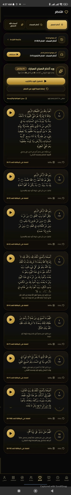
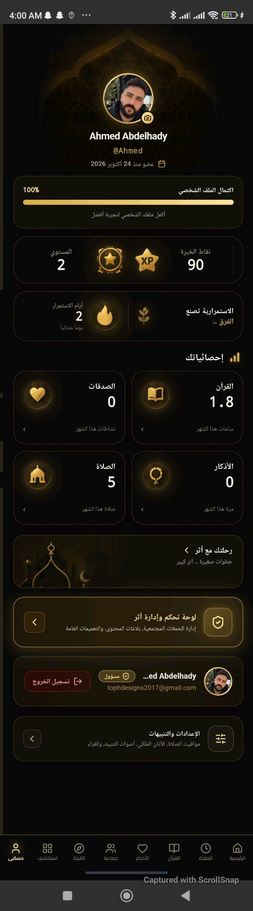

01
مواقيت الصلاة
رتّب يومك حول الصلاة، لا أن تبحث لها عن وقت بين انشغالاتك.
موعدٌ يردّك إلى السكينةوسط زحام اليوم، اصنع لنفسك لحظات تعود فيها إلى الله. قرآنٌ تتلوه، وذكرٌ يطمئن قلبك، وصلاةٌ تحفظ صلتك به.
﴿ وَالْبَاقِيَاتُ الصَّالِحَاتُ خَيْرٌ عِندَ رَبِّكَ ثَوَابًا وَخَيْرٌ أَمَلًا ﴾
سورة الكهف · الآية ٤٦
أدواتك الإيمانية الأساسية في تجربة هادئة، واضحة، وقريبة منك.
رتّب يومك حول الصلاة، لا أن تبحث لها عن وقت بين انشغالاتك.
موعدٌ يردّك إلى السكينةاقرأ، استمع، وعُد إلى الموضع الذي توقفت عنده متى شئت.
آيةٌ تنير يومكاجعل للذكر مكانًا ثابتًا في يومك، وابدأ صباحك واختم مساءك بقلب حاضر.
ذكرٌ يرافقكاعرف اتجاه قبلتك بسهولة أينما كنت، لتبقى مستعدًا للصلاة.
وجهةٌ واحدةواجهة هادئة تجمع ما تحتاجه في رحلتك اليومية؛ من القرآن والأذكار إلى الصلاة ومتابعة تقدّمك.




كل آية تقرؤها، وكل صلاة تحافظ عليها، وكل ذكرٍ تردّده بصدق؛ خطوة صغيرة قد تترك في قلبك وفي حياتك أثرًا أكبر مما تتصور.
أثر مساحة تساعدك على الاقتراب من الطاعة ببساطة، دون ضجيج أو تعقيد. ابدأ بما تستطيع، وداوم على ما ينفعك.
اجعل للخير مكانًا في يومكهذه ملامح لما نطمح إلى بنائه مستقبلًا، خطوةً بخطوة، وبما يخدم رحلتك الإيمانية.
تجربة أكثر سلاسة للاستماع إلى القرآن والأذكار، مع خيارات تساعدك على مواصلة الاستماع في وقتك وطريقتك.
مساحة تفاعلية تشجّع على المبادرات الطيبة، ومشاركة الإنجاز، والتواصي بما ينفع دون أن تفقد التجربة هدوءها.
خيارات مرنة للتذكير بالصلاة والذكر والآيات، تختار منها ما يناسب روتينك ويعينك على الاستمرار.
طرق لطيفة تساعدك على متابعة عاداتك التعبدية وتشجّعك على الثبات، دون تحويل العبادة إلى سباق.
الأفكار أعلاه تصوّر مبدئي لتطويرات مستقبلية، وليست ميزات متاحة بالضرورة في الإصدار الحالي.
حمّل أثر، واجعل للقرآن والصلاة والذكر مساحةً في يومك.
تحميل تطبيق أثر